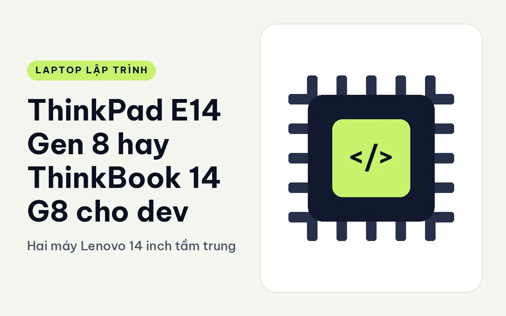
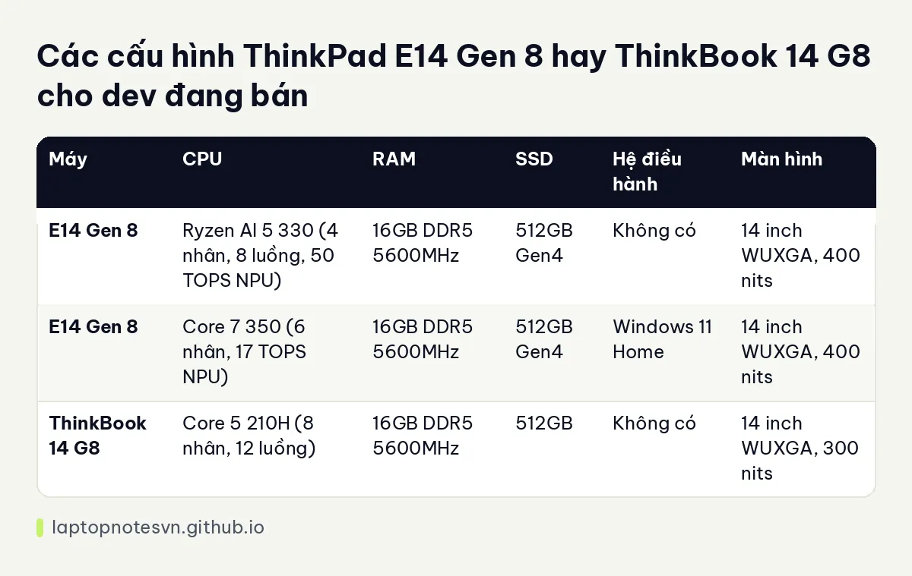

ThinkPad E14 Gen 8 hay ThinkBook 14 G8 cho dev - Hai máy Lenovo 14 inch tầm trung

Lenovo bán song song hai dòng máy tầm trung 14 inch với giá gần nhau và nhiều người mua nhầm lẫn: ThinkPad E và ThinkBook. Nhìn lướt thì tên khác, vỏ khác, nhưng bên trong đều là Core hoặc Ryzen, 16GB RAM, 512GB SSD. Sự khác biệt thật sự nằm ở những chi tiết nhỏ mà người viết code sẽ gặp mỗi ngày: pin, cổng, khả năng nâng cấp, bàn phím.
Lựa chọn thứ nhất là ThinkPad E14 Gen 8, đời máy phổ thông của dòng ThinkPad.
Lựa chọn thứ hai là Lenovo ThinkBook 14 G8 IRL, dòng dành cho doanh nghiệp nhỏ.
Thân máy và trọng lượng của ThinkPad E14 Gen 8 và ThinkBook 14 G8
E14 Gen 8 nặng 1,34 kg, vỏ nhôm, pin 48Wh. ThinkBook 14 G8 nặng 1,36 kg, dày 17,5 mm, pin 45Wh. Trọng lượng gần như bằng nhau, chênh nhau 20 gam. Cả hai đều bỏ vừa ba lô mỏng, và chuyện pin hơn kém 3Wh không tạo ra khác biệt đáng kể khi dùng.
Cổng của ThinkBook khá đầy đủ: USB-A, USB-C, Thunderbolt 4, HDMI, Ethernet và khe thẻ SD. E14 bản Intel Core 7 350 có 2 cổng Thunderbolt 4. Nếu bạn hay cắm dây mạng hoặc đọc thẻ nhớ, ThinkBook tiện hơn. Nếu bạn cần hai cổng Thunderbolt để nối màn hình và ổ ngoài, E14 bản Intel có lợi thế.
Về khả năng nâng cấp, E14 bản AMD Ryzen AI 5 330 có 2 khe RAM và 2 khe SSD. Đây là thông tin quý giá cho dev vì bạn có thể tự thêm RAM lên 32GB hoặc cắm thêm ổ lưu trữ mà không cần thay máy. Dữ liệu ThinkBook không nói rõ số khe, vì vậy nên hỏi cửa hàng trước khi mua nếu bạn có kế hoạch nâng cấp.
Các bản cấu hình ThinkPad E14 Gen 8 và ThinkBook 14 G8 đang có
| Máy | CPU | RAM | SSD | Hệ điều hành | Màn hình |
|---|---|---|---|---|---|
| E14 Gen 8 | Ryzen AI 5 330 (4 nhân, 8 luồng, 50 TOPS NPU) | 16GB DDR5 5600MHz | 512GB Gen4 | Không có | 14 inch WUXGA, 400 nits |
| E14 Gen 8 | Core 7 350 (6 nhân, 17 TOPS NPU) | 16GB DDR5 5600MHz | 512GB Gen4 | Windows 11 Home | 14 inch WUXGA, 400 nits |
| ThinkBook 14 G8 | Core 5 210H (8 nhân, 12 luồng) | 16GB DDR5 5600MHz | 512GB | Không có | 14 inch WUXGA, 300 nits |
Cả ba bản đều 16GB RAM. Với dev web hoặc dev script, 16GB đủ dùng nhưng sẽ chật khi bạn bật Docker với vài container cùng IDE nặng. Cách tính RAM cho từng kiểu công việc có ở bài lập trình viên cần bao nhiêu RAM.

Điểm đáng chú ý về CPU: Core 5 210H của ThinkBook có 8 nhân và 12 luồng, nhiều hơn 6 nhân của Core 7 350 trên E14, dù tên gọi Core 7 nghe cao cấp hơn. Chip dòng H hướng về hiệu năng, trong khi Core 7 350 dòng U hướng về tiết kiệm điện. Với việc biên dịch và chạy test, nhiều nhân hơn có lợi. Ngược lại E14 có NPU 17 hoặc 50 TOPS còn ThinkBook thì dữ liệu không ghi NPU.
ThinkPad E14 Gen 8 hợp việc gì, ThinkBook 14 G8 hợp việc gì
- Web frontend, Node.js, script: cả hai đều đủ, chọn theo bàn phím và cổng.
- Backend Java, Go, Docker nhẹ: ThinkBook với 8 nhân có chút lợi thế khi build, E14 AMD có lợi thế vì nâng được RAM.
- Dev học tập, sinh viên: E14 bản Core 7 350 có sẵn Windows 11 Home, cài xong dùng ngay.
- Dev dùng Linux: cả hai bản không có hệ điều hành là ThinkBook và E14 AMD, tiết kiệm được khoản mua bản quyền Windows nếu bạn chỉ định cài Linux.
Hai chi tiết dễ bỏ qua
Chi tiết thứ nhất là màn hình. E14 sáng 400 nits, ThinkBook 300 nits. Nếu bạn làm việc cạnh cửa sổ hoặc ngoài quán, chênh lệch này sẽ thấy rõ. Cả hai đều là IPS WUXGA 1920 x 1200 chống chói, hợp để đọc code và tài liệu nhưng không phải màn cho thiết kế.
Chi tiết thứ hai là hệ điều hành. Hai trong ba cấu hình bán không kèm hệ điều hành, tức là bạn phải tự cài. Dev thường làm tốt việc này, nhưng nếu bạn muốn dùng Windows chính hãng thì chỉ có bản Core 7 350 là kèm sẵn.
Pin, nhiệt và dùng hằng ngày
Pin 48Wh của E14 và 45Wh của ThinkBook đều thuộc nhóm trung bình. Dữ liệu không ghi số giờ dùng thực tế, nên bài này không đưa con số nào. Điều có thể nói chắc là chip dòng U trên E14 Core 7 350 thường tiết kiệm điện hơn chip dòng H trên ThinkBook Core 5 210H, vì dòng H được thiết kế để chạy mạnh hơn. Nếu bạn hay code ở quán cà phê mà ít cắm sạc, hãy thử máy thật rồi mới quyết.
Với người code cả ngày, bàn phím là thứ chạm vào nhiều nhất. ThinkPad nổi tiếng nhờ cảm giác gõ, còn ThinkBook theo hướng gọn hơn. Cảm giác gõ là chuyện cá nhân nên không có đáp án chung: bạn nên gõ thử vài phút trước khi trả tiền. Hãy mở một file code dài và gõ liên tục để thấy phím có mỏi tay không.
Một lời nhắc về khoản cài đặt: nếu chọn bản không kèm hệ điều hành, hãy chuẩn bị USB cài sẵn trước ngày nhận máy để dựng môi trường làm việc ngay hôm đó.
Chốt lại giữa ThinkPad E14 Gen 8 và ThinkBook 14 G8
Chọn E14 Gen 8 nếu bạn cần màn sáng hơn, bàn phím ThinkPad và khả năng nâng cấp RAM, SSD, nhất là bản AMD có hai khe cho mỗi thứ. Ghi chú riêng của máy nằm ở E14 Gen 8 cho lập trình.
Chọn ThinkBook 14 G8 nếu bạn cần cổng Ethernet và khe SD, thích chip 8 nhân cho việc build và không quan tâm màn sáng. Hãy xác nhận số khe RAM với cửa hàng nếu bạn dự định nâng 32GB.
Nếu đang phân vân, hãy nghĩ tới năm sau: bạn có thấy mình cần thêm RAM không? Nếu có, E14 AMD là con đường rõ ràng nhất.
Đăng ngày 09/11/2026